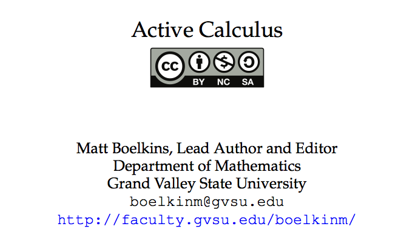

(Re:)Designing Class for Flipped Learning Experiences
Robert Talbert, Grand Valley State University / Twitter: @RobertTalbert / Google+: +RobertTalbert
Webinar: Mount Aloysius College, 10 Sept 2014

Goals for this seminar
Have a clear idea of what flipped learning is and is not
Answer questions you have
One long-term and one short-term goal for learning/doing more
Outline
Why does flipped learning make sense?
Do I have a flipped classroom?
Some of your questions
Example: Flipped calculus
Four lessons learned from flipping
More of your questions
Flipped learning
Flipped learning is a pedagogical approach in which direct instruction moves from the group space to the individual learning space, and the resulting group space is transformed into a dynamic, interactive learning environment where the educator guides students as they apply concepts and engage creatively in the subject matter.
Three reasons flipped learning makes sense
1. Information is no longer scarce.
2. Because information is not scarce, Context trumps content.
3. Traditional instructor-centered pedagogy doesn't work the way we (and students) think it works.
Is my classroom flipped?
Q: Is your class flexible? That is, do students
Have time and space to reflect on their work?
Receive frequent formative assessment?
Have different ways to learn content and demonstrate mastery?
Q: Is your class learner-centered? That is, do students
Engage in satisfyingly difficult, creative tasks without the teacher being central?
Have a clear path to successful engagement with those activities regardless of skill level?
Q: Is your class intentional? That is, do students
Have a clear set of standards for learning outcomes?
Have access to high-quality content in multiple forms and sources?
Work intentionally on self-regulated learning skills?
Q: Do you conduct your class as a professional educator? That is, do you
Make yourself available for consultations as needed?
Use data from frequent formative assessments and observations to make decisions about the class?
Collaborate with other educators, reflect on what you're doing, and practice a growth mindset?
Some of your questions:
Does the flipped class work for any course (including humanities)?
How to integrate technology into a flipped class?
Suggestions for transitioning from traditional to flipped?
Flipped learning in Calculus
MTH 201 (Calculus), Fall 2013 and Fall 2014 at Grand Valley State UniversityWe flipped calculus because lectures kept ending up like this:

Design philosophy
Content mastery and conceptual fluency
Do calculus in the style of a professional
Use the client-consultant model
Intentional focus on self-regulated learning and technology
Textbook
Active Calculus by Matt Boelkins
Video channel
Lab materials
http://www.geogebratube.com, search under GVSU MTH201
Class preparation: Guided Practice
Structured preparation assignment for introducing basic content and providing pre-class formative assessment.
trinket.io as a platform
In class: Where the magic happens
Post-class
Online homework using WeBWorK
Portfolio problems
Standard timed tests and final exam
Practical matters
Did students do the pre-class work?
Median completion rates of Guided Practice were 92% for one section and 96% in the other section.
Did students learn through the pre-class work?
Entrance Quiz median values were 78% and 72%.
How much time did it take to make the videos?
With a collaborator, 60 of the 91 videos were completed in a 10-day period prior to the start of classes.
Results from the student experience
The setup for the class is perfect, i dont [sic] understand why all classes are not like this, like you said the hardest part of the class is the homework and other teachers expect us to just pick up from what they said in lectures which is out of date teaching. Like for my Engineering class we do all the hard stuff outside of class.
I really enjoy this style of class. I would like to take one similar to this for my calc 2 experience. Are there any other professors that run class this way? If so I would love to know as I would switch into a class like this in a heartbeat.
Four things I wish I'd known about flipping
Students do not see the benefits automatically
Biggest issue: Students' time/task management
Significantly more work -- at first
Communication is the key
Thank you
Robert Talbert, Associate Professor of Mathematics, Grand Valley State University
talbertr@gvsu.edu / @RobertTalbert / +RobertTalbert
This presentation available at http://roberttalbert.github.io/mtaloysius
All Calculus materials freely available at http://github.com/RobertTalbert/calculus under a Creative Commons license
Video content available at http://bit.ly/GVSUCalculus
Casting Out Nines blog: http://chronicle.com/blognetwork/castingoutnines